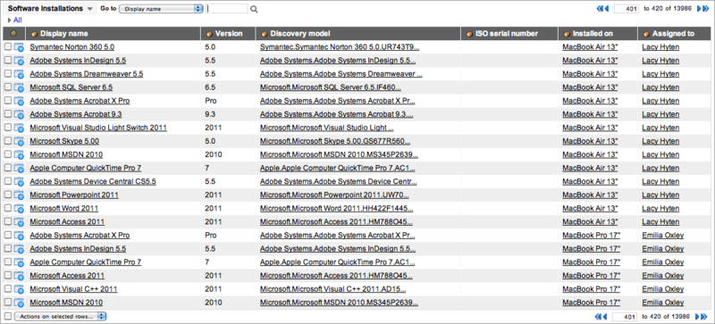
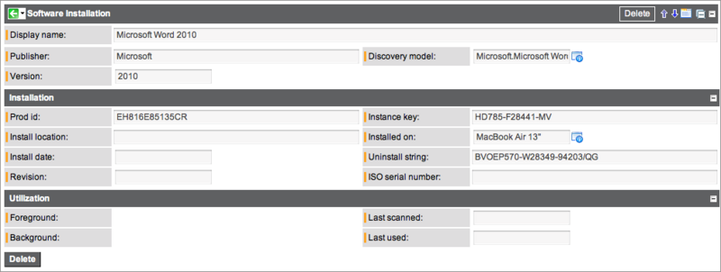

Determining Where Software is Installed
1 Overview
When determining where software is installed, keep the following in mind:
- The software instance no longer contains discovered info. The information previously went to the Software Instance [cmdb_software_instance] table, but now goes to the Software Installation [cmdb_sam_sw_install] table. Because the table has changed, you must change your transform maps to point to the new table.
- Models identified by a discovery tool are linked to software models.
- Use grouping to obtain more specific information from a software counter.
- Software installations link a computer with a software model (via a discovery model).
A discovery tool places the data it obtains into the Software Installation [cmdb_sam_sw_install] table. All of the information can be seen in the Software Installations list and the individual Software Installation forms. When a record is created, the system analyzes the Discovery Model table and identifies five key points:
- Publisher
- Display name
- Prod ID
- Version
- Revision
| |
Note: For information about upgrading from Software License Management to Software Asset Management, see Upgrading to Software Asset Management. |
2 Finding Software on the Network
After using a discovery tool, you can find a definitive list of all the software found on the network.
- Navigate to Software Asset Management > Discovery > Software Installations.
- 
- A software administrator can, for example, look at the list and see that Adobe Acrobat 9.0, 9.2, 9.3, and 9.5 were found. Then, the administrator can edit software discovery models so all the dot versions are simply considered version 9.0 when doing reconciliation.
- Click a Display Name in a row.
- All installations that map to an individual software discovery model are displayed.
- 
{kind=link}
{kind=link}
| Field | Description |
|---|---|
| Display name | Name of the software installation as it appears in record lists. |
| Publisher | Publisher of the software. |
| Version | Version of the software. |
| Discovery model | Software discovery model that represents the installed software. |
| Prod id | Number created by the publisher to identify the software. |
| Install location | Path under which the software is installed. |
| Install date | Date on which the software was installed. |
| Revision | Revision of the software. |
| Instance key | Encrypted credentials for the software installation. |
| Installed on | Hardware on which the software is installed. |
| Uninstall string | Identifier used to uninstall the software. |
| ISO serial number | ISO number of the software. |
| Foreground | Duration of foreground usage of the software. |
| Background | Duration of background usage of the software. |
| Last scanned | Date and time on which the software was last discovered on this hardware. |
| Last used | Date and time on which the software was last used on this hardware. |
| Counted by | The counter summary name that the installation is counted on. |
| Entitlement | Entitlement that is associated with the software installation. |
| Inferred suite | Software suite inferred by the inference parameters. For more information on inference parameters, see Creating a Software Model. |
| Valuation | Indicates the number of rights the install has. |
| Cached | If checked, the license installation has already been counted. |
| Omit from suites | If checked, the license will be ignored for any suite calculations. This box is automatically checked if the install finds a possible entitlement of the exact software model for this configuration item. |
| |
Note: A user with the Asset role can delete software installations, but it is not recommended. As an alternative, archive software installation information. |
| |
Note: Third-party discovery tools can use software normalization to more effectively manage the software installation database. Software normalization allows you to standardize your software installation data, such as the display name, publisher, revision and version. You can personalize the software installation form to include these normalization fields. For more information, see Personalizing Forms. |
3 Scanning Software Installations with the System Scheduler
The Software Asset Management plugin adds a scheduled job for scanning software installations named SAM License Counters in System Scheduler > Scheduled Jobs. The SAM License Counters job occurs at 2:00am (local time) every morning . The job queries the Software Installation [cmdb_sam_sw_install] table and captures any installations that have not been scanned in the past 7 days. The job runs a join query on hardware that has been scanned within the last day and software installations that have not been scanned in the last 7 days. These software installations are then removed.